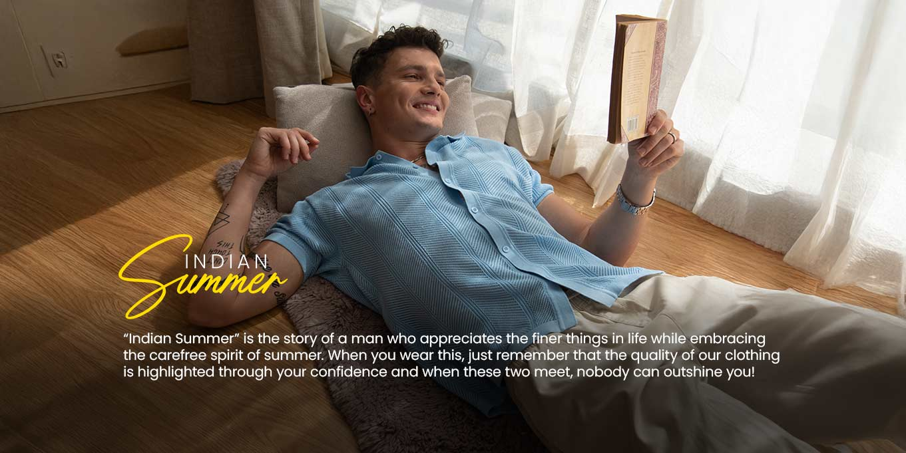

At Draper and Legacy, we celebrate the timeless elegance and refined sophistication of classic menswear inspired by
old money style.Our collection embodies heritage craftsmanship and understated luxury, designed for the modern gentleman who
values tradition, quality,and impeccable tailoring. Every garment is thoughtfully crafted using premium fabrics and classic
silhouettes that never go out of style — from tailored blazers and crisp dress shirts to polished trousers and heritage outerwear.
Draper and Legacy is more than just clothing; it’s a lifestyle rooted in grace, legacy, and quiet confidence. Discover a wardrobe
where every piece tells a story of prestige, efinement, and enduring class.Focused on ethical production and timeless design, Draper and Legacy caters to men who seek refined fashion that stands apart
from trends. Whether it’s a day at the office, an evening affair, or a weekend escape, the brand’s collections offer versatility
and class. With clean lines, classic silhouettes, and a minimalist aesthetic, Draper and Legacy empowers men to dress with intention
and leave a lasting impression — one timeless piece at a time.